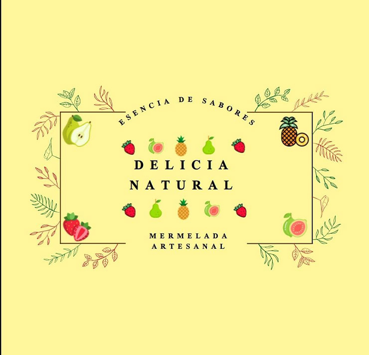

Nosotros
La mermelada artesanal te aporta energía, grasas y glucosa, esto tiene beneficios en las personas activas , niños deportistas, estás grasas son buenas ya que los azúcares naturaleza siempre puedes ir en una dieta sana ya que no contiene conversadores ni colorantes
Al aprovecharse toda la fruta, la mermelada artesanal aporta mucha fibra. Esto ayuda al buen funcionamiento del tránsito intestinal. Utilízala para tus desayunos y empieza así el día con energía.
La mermelada surge como la solución para tener fruta durante todo el año y, a pesar de que los métodos de conservación han evolucionado desde su creación, su producción ha perdurado hasta hoy en día.
